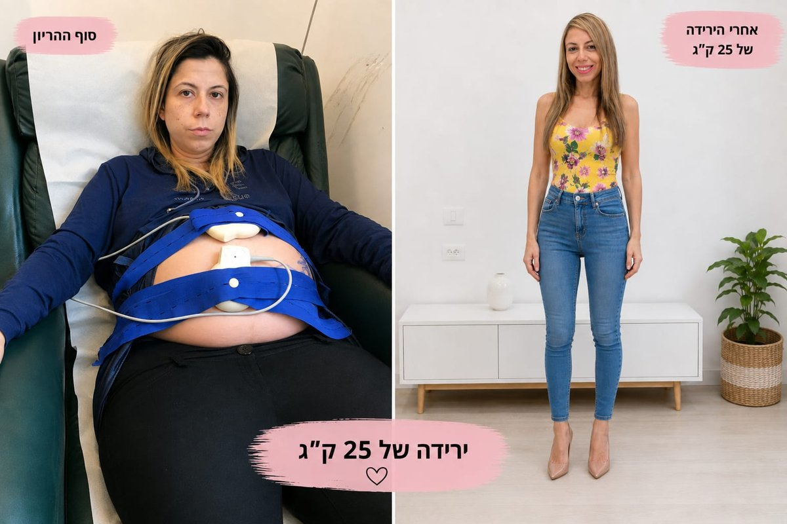

25 ק"ג פחות,
כבר 6 שנים.
גם אני מכירה את התחושה שהגוף משתנה ושצריך למצוא דרך שאפשר באמת לחיות איתה.
אחרי ההריונות שלי מצאתי את עצמי עם 25 ק"ג יותר. אבל השינוי המשמעותי מבחינתי לא היה למצוא עוד דיאטה שאצליח "להחזיק" לתקופה קצרה.
הייתי צריכה ללמוד איך לבנות דרך שאפשר להתמיד בה גם כשיש חשקים, חריגות, אירועים וימים שפשוט לא הולכים לפי התוכנית.
היום, 25 ק"ג פחות וכבר 6 שנים שומרת על התוצאה, וזה בדיוק מה שאני מלמדת גם את האנשים שאני מלווה.
הסיפור שלי, בשתי דקות
